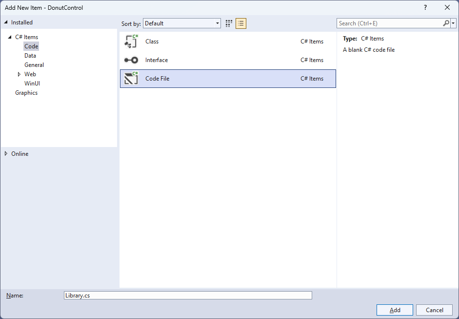
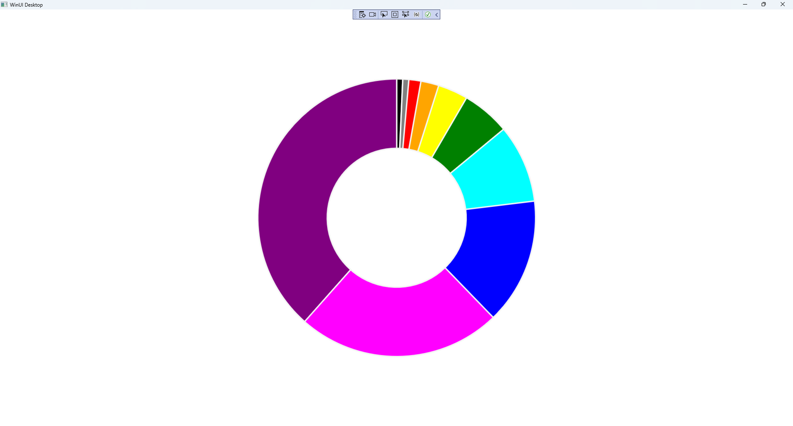

Donut Control
Learn creating a Donut Control using Windows App SDK with this Tutorial
Donut Control shows how to create a Control that displays values in the form of a Donut Chart, which is like a Pie Chart but with a hole in the middle using a toolkit from NuGet using the Windows App SDK.
Step 1
Follow Setup and Start on how to get Setup and Install what you need for Visual Studio 2022 and Windows App SDK.


Step 2
Then in Visual Studio within Solution Explorer for the Solution, right click on the Project shown below the Solution and then select Manage NuGet Packages...

Step 3
Then in the NuGet Package Manager from the Browse tab search for Comentsys.Toolkit.WindowsAppSdk and then select Comentsys.Toolkit.WindowsAppSdk by Comentsys as indicated and select Install

This will add the package for Comentsys.Toolkit.WindowsAppSdk to your Project. If you get the Preview Changes screen saying Visual Studio is about to make changes to this solution. Click OK to proceed with the changes listed below. You can read the message and then select OK to Install the package, then you can close the tab for Nuget: DonutControl by selecting the x next to it.
Step 4
Then in Visual Studio within Solution Explorer for the Solution, right click on the Project shown below the Solution and then select Add then New Item…

Step 5
Then in Add New Item from the C# Items list, select Code and then select Code File from the list next to this, then type in the name of Library.cs and then Click on Add.

Step 6
You will now be in the View for the Code of Library.cs and then you need to type the following Code:
using Comentsys.Toolkit.WindowsAppSdk;
using Microsoft.UI;
using Microsoft.UI.Xaml;
using Microsoft.UI.Xaml.Controls;
using Microsoft.UI.Xaml.Media;
using System.Collections.Generic;
using System.Linq;
using Windows.UI;
namespace DonutControl;
public class Donut : Grid
{
private const double total = 100;
private const double circle = 360;
private List<double> _items = new();
// Donut GetSector & Percentages Method
// Donut Layout Method
// Donut Properties
}
public class Library
{
private readonly List<Color> _colours = new()
{
Colors.Black,
Colors.Gray,
Colors.Red,
Colors.Orange,
Colors.Yellow,
Colors.Green,
Colors.Cyan,
Colors.Blue,
Colors.Magenta,
Colors.Purple
};
// Library Methods
}
Library.cs defines a namespace which allows classes to be defined together, usually each is separate but will be defined in Library.cs
along with adding using statements such as for the package of Comentsys.Toolkit.WindowsAppSdk.
Step 7
While still in the namespace of DonutControl in Library.cs and in the class of Donut
after the Comment of // Donut GetSector & Percentages Method type the following Methods:
private static Sector GetSector(double size, double start,
double finish, double radius, double hole, Color fill)
{
Sector sector = new()
{
Hole = hole,
Start = start,
Finish = finish,
Radius = radius,
Fill = new SolidColorBrush(fill),
Stroke = new SolidColorBrush(Colors.WhiteSmoke)
};
Canvas.SetLeft(sector, (size - radius * 2) / 2);
Canvas.SetTop(sector, (size - radius * 2) / 2);
return sector;
}
private List<double> Percentages()
{
List<double> results = new();
double total = _items.Sum();
foreach (double item in _items)
{
results.Add(item / total * 100);
}
return results.OrderBy(o => o).ToList();
}
GetSector is used to obtain a Sector from Comentsys.Toolkit.WindowsAppSdk and then set the values for this along with
positioning it on a Canvas and Percentages is used to get the values as a set of percentages to be displayed in the Control.
Step 8
While still in the namespace of DonutControl in Library.cs and in the class of Donut
after the Comment of // Donut Layout Method type the following Method:
internal void Layout()
{
double finish = 0;
double value = circle / total;
List<double> percentages = Percentages();
Canvas canvas = new()
{
Width = Radius * 2,
Height = Radius * 2
};
Children.Clear();
for (int index = 0; index < percentages.Count; index++)
{
double start = finish;
double percentage = percentages[index];
Color colour = (index < Palette.Count) ? Palette[index] : Colors.Black;
double sweep = value * percentage;
finish = sweep + start;
if (finish >= 360)
finish = sweep;
Sector sector = GetSector(Radius * 2, start, finish, Radius, Hole, colour);
canvas.Children.Add(sector);
}
Viewbox viewbox = new()
{
Child = canvas
};
Children.Add(viewbox);
}
Layout uses Percentages to get the values to be used then builds up the Control by using
GetSector and will use Properties that will be defined in the next Step.
Step 9
While still in the namespace of DonutControl in Library.cs and in the class of Donut
after the Comment of // Donut Properties type the following Properties:
public List<Color> Palette { get; set; } = new();
public List<double> Items
{
get { return _items; }
set { _items = value; Layout(); }
}
public static readonly DependencyProperty RadiusProperty =
DependencyProperty.Register("Radius", typeof(int),
typeof(Donut), new PropertyMetadata(100, new PropertyChangedCallback(
(DependencyObject obj, DependencyPropertyChangedEventArgs eventArgs) =>
{
((Donut)obj).Layout();
})));
public static readonly DependencyProperty HoleProperty =
DependencyProperty.Register("Hole", typeof(UIElement),
typeof(Donut), new PropertyMetadata(50.0, new PropertyChangedCallback(
(DependencyObject obj, DependencyPropertyChangedEventArgs eventArgs) =>
{
((Donut)obj).Layout();
})));
public int Radius
{
get { return (int)GetValue(RadiusProperty); }
set { SetValue(RadiusProperty, value); Layout(); }
}
public double Hole
{
get { return (double)GetValue(HoleProperty); }
set { SetValue(HoleProperty, value); Layout(); }
}
Palette is used for the colours for the Control and Items is for the values.
Radius and Hole also have Dependency Properties which are used for Data Binding.
Step 10
Still in Library.cs for the namespace of DonutControl and in the class of Library
after the Comment of // Library Methods by typing the following Methods:
private int Fibonacci(int value) => value > 1 ?
Fibonacci(value - 1) + Fibonacci(value - 2) : value;
public void Load(Grid grid)
{
grid.Children.Clear();
Donut donut = new()
{
Palette = _colours
};
donut.Items = Enumerable.Range(1, donut.Palette.Count)
.Select(Fibonacci).Select(s => (double)s).ToList();
grid.Children.Add(donut);
}
Fibonacci is used to get numbers to use with the Control and is used by Load to get the values to be displayed using the Control.
Step 11
Step 12
In the XAML for MainWindow.xaml there will be some XAML for a StackPanel, this should be Removed:
<StackPanel Orientation="Horizontal"
HorizontalAlignment="Center" VerticalAlignment="Center">
<Button x:Name="myButton" Click="myButton_Click">Click Me</Button>
</StackPanel>
Step 13
While still in the XAML for MainWindow.xaml above </Window>, type in the following XAML:
<Grid>
<Viewbox>
<Grid Margin="50" Name="Display"
HorizontalAlignment="Center"
VerticalAlignment="Center" Loaded="Load"/>
</Viewbox>
</Grid>
This XAML contains a Grid with a Viewbox which will Scale a Grid and
a Loaded event handler for Load.
Step 14
Step 15
In the Code for MainWindow.xaml.cs there be a Method of myButton_Click(...) this should be Removed by removing the following:
private void myButton_Click(object sender, RoutedEventArgs e)
{
myButton.Content = "Clicked";
}
Step 16
Once myButton_Click(...) has been removed, within the Constructor of public MainWindow() { ... } and below the line of this.InitializeComponent(); type in the following Code:
private readonly Library _library = new();
private void Load(object sender, RoutedEventArgs e) =>
_library.Load(Display);
Here an Instance of Library is created then below this is the Method of Load that will be used with Event Handler
from the XAML, this Method uses Arrow Syntax with the => for an expression body which is useful when a Method only has one line.
Step 17
Step 18
Once running you will see the Donut Control displayed showing a representation of the first few numbers of the Fibonacci Sequence.

Step 19